Exhibitions
VaCa Marquetry has exhibited in Italy and Dubai, presenting original wood veneer marquetry portraits to collectors and institutions across two continents. This is the complete exhibition record.
World Art Dubai
March 2024 — International exhibition of contemporary and fine art, Dubai World Trade Centre. VaCa Marquetry presented original marquetry portraits alongside artists from across Europe and the Gulf.
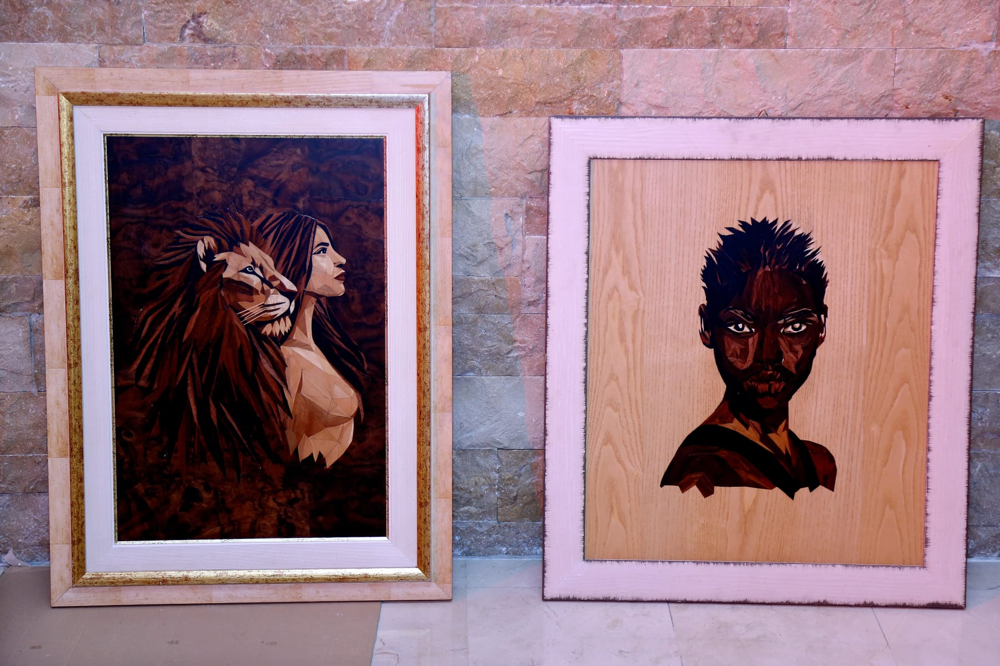

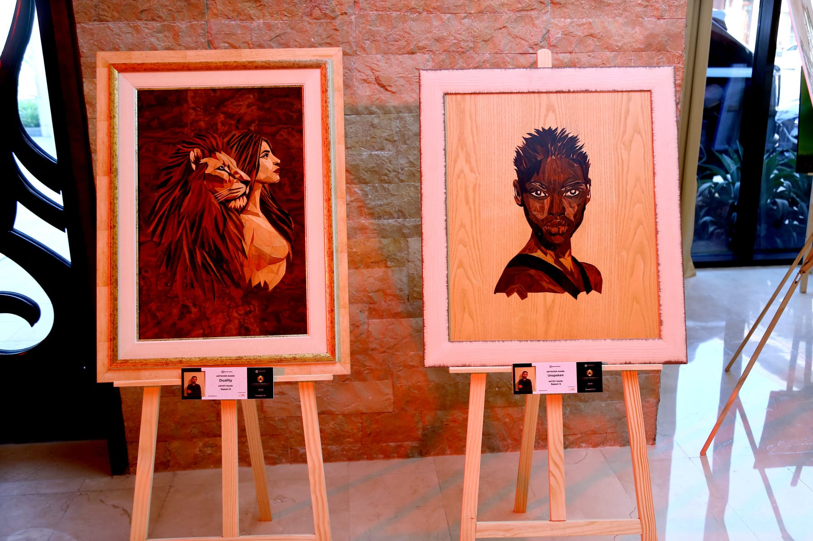
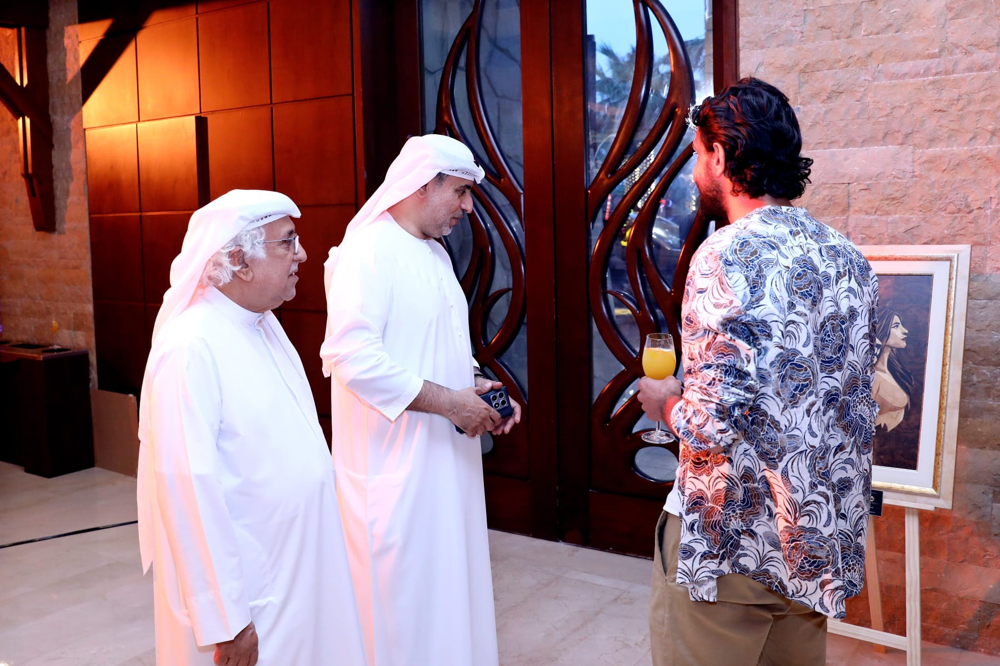
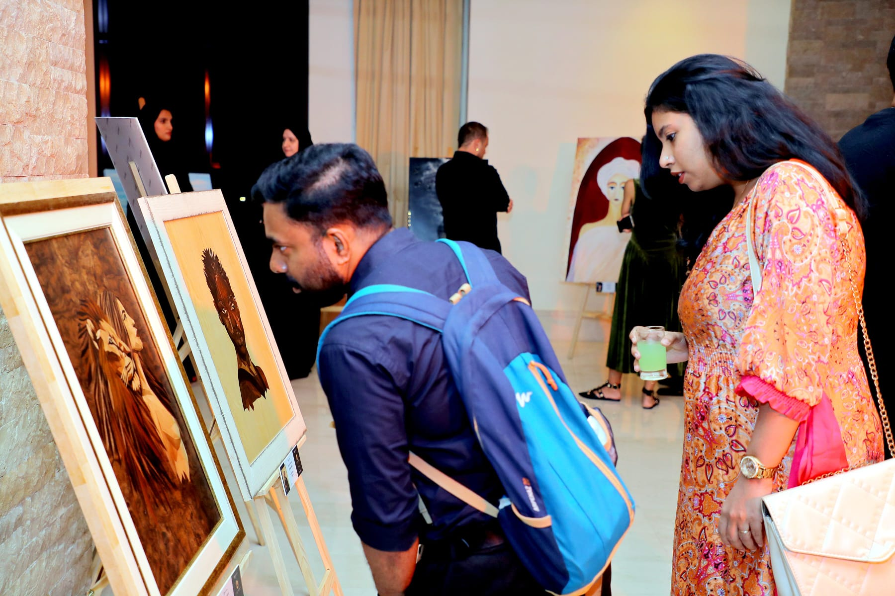

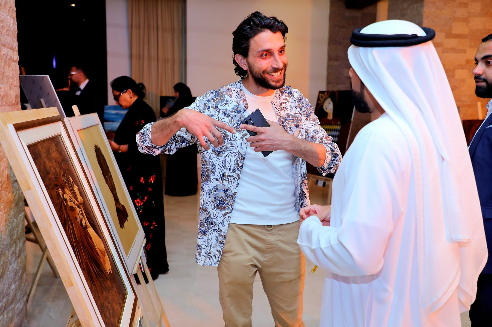

Chiesa di Santa Caterina
Lucca, Italy — Original wood veneer marquetry portraits presented at the historic Chiesa di Santa Caterina in Lucca. A key moment in the development of VaCa Marquetry as a professional artistic practice — the work shown in a space that understood the weight of craft.
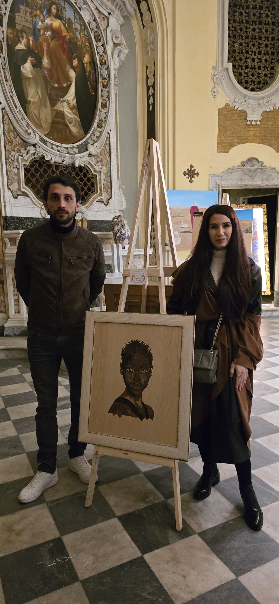
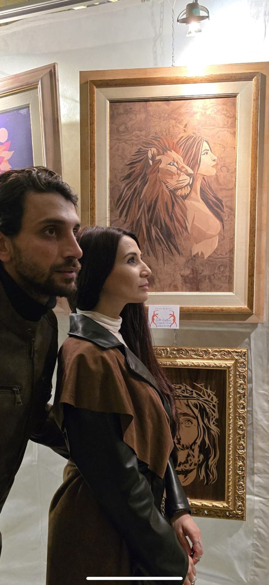
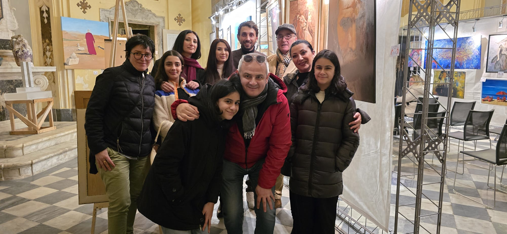
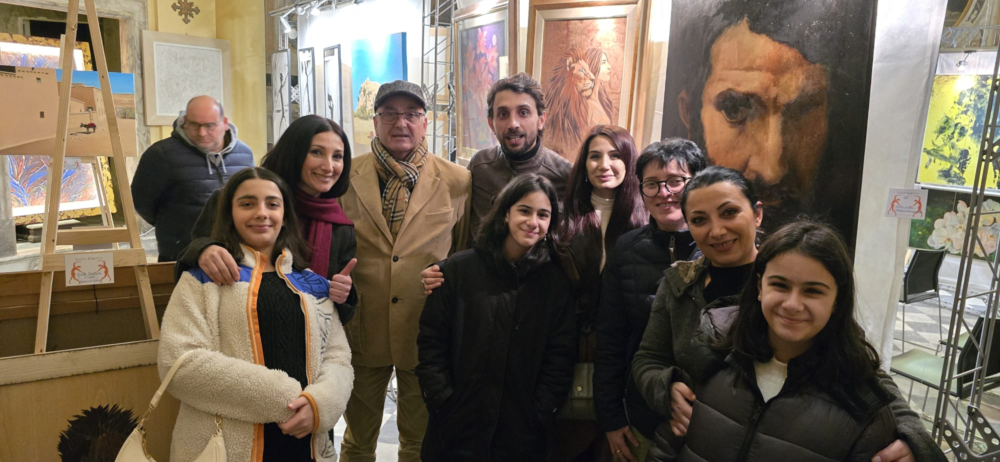
Gesù
Pala Todisco, San Giuliano Terme, Italy — Not carved in stone, but in time. A symbolic presentation of sacred form expressed through marquetry craftsmanship. Wood veneer as the material of devotion — each piece placed with the precision of a lifetime of practice.
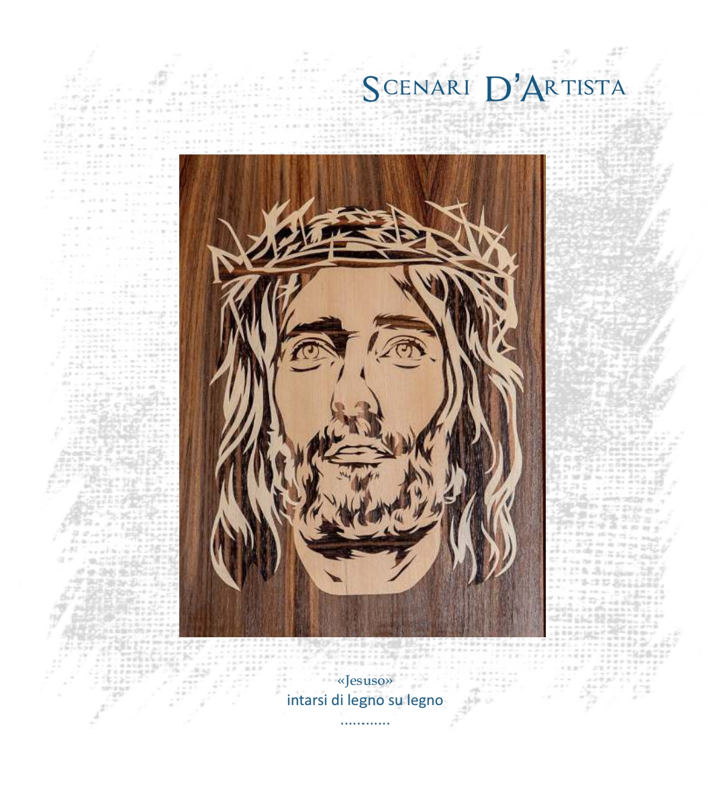
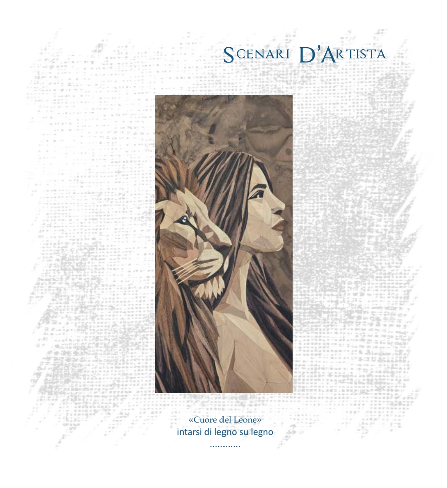
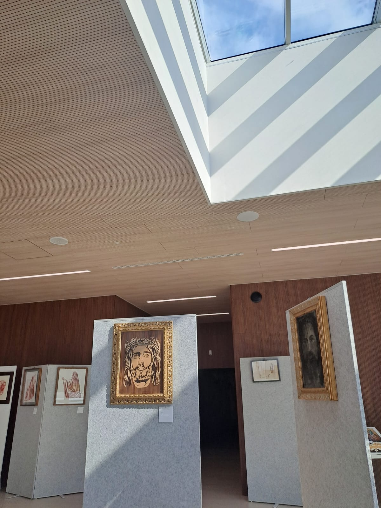
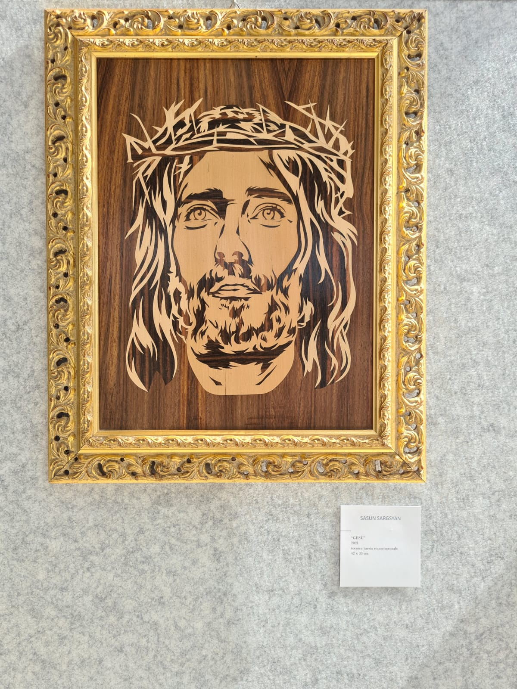
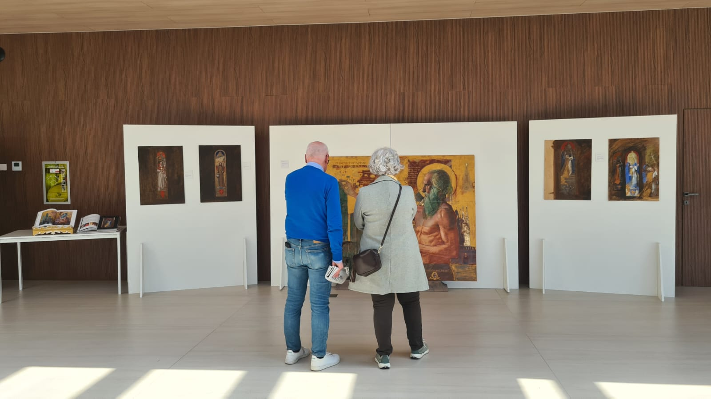

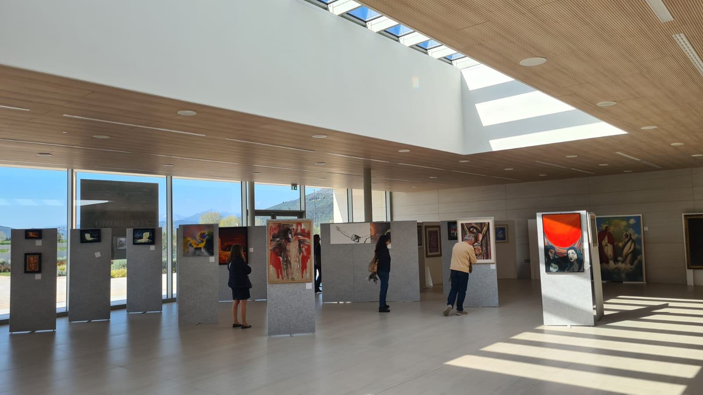
Awards & Certificates
Formal recognition received for the quality and originality of the work presented at exhibition.
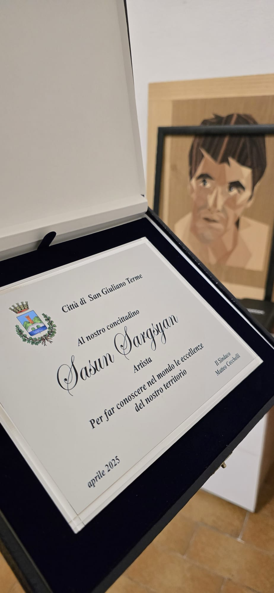
Certificate of Recognition
Awarded in recognition of the quality and originality of wood veneer marquetry portraits presented at the San Giuliano Terme exhibition — the first formal acknowledgement of VaCa Marquetry as a distinctive fine art practice.
Commission an Original Work
Each commission begins with a conversation. A free preview is provided within 24 hours, no commitment required.
Begin a Custom Portrait